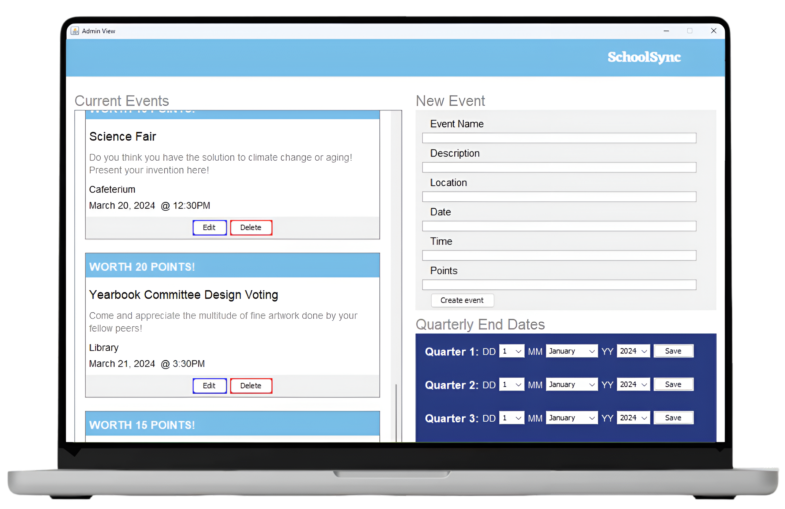
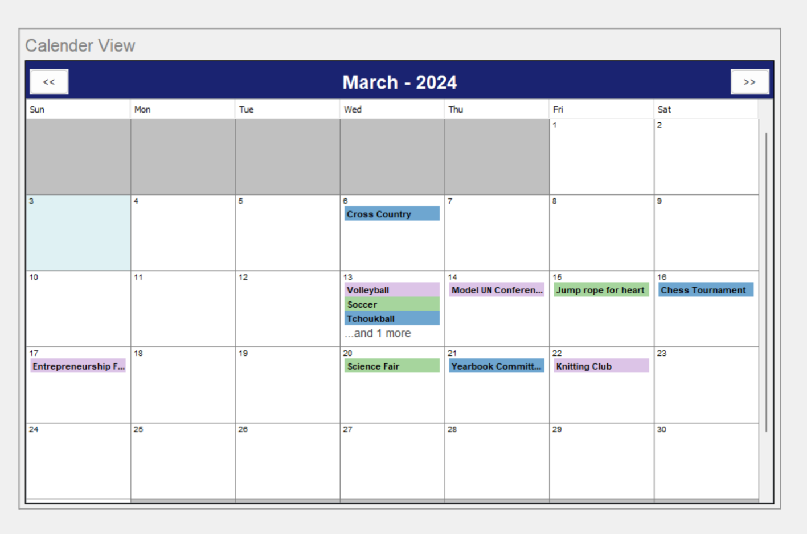
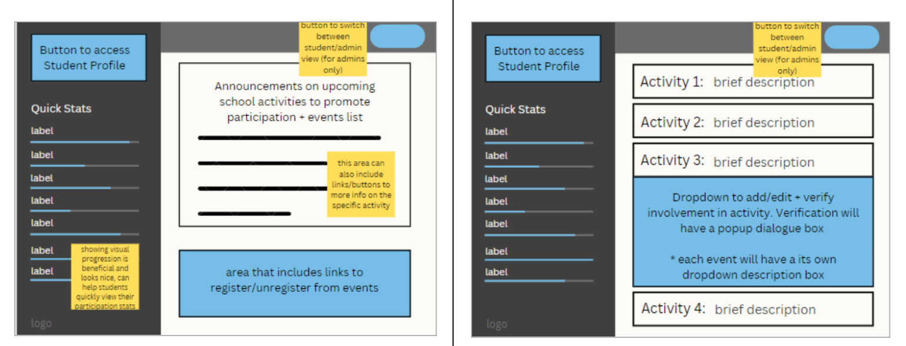

SchoolSync
An organizational tool to track, organize, and visualize student participation in school events

TL;DR
School event systems are often fragmented, making it difficult for students to discover events and for administrators to manage them efficiently.
SchoolSync is a centralized desktop application that streamlines event management through role-based views, interactive calendars, and automated data handling for both students and administrators.
Key Features
- Role-based access
- Centralized event listing
- Interactive calendar
- Personalized event tracking
- Incentive-based system
- Clean + intuitive UI
Next Steps
- Added mobile + web accessibility
- Push notifications + reminders
- Advanced event filtering
- Integration with school systems
Process
Context
i. the problem
Throughout school environments, event participation often depends on scattered announcements, spreadsheets, or manual tracking systems. This creates friction for both students trying to stay informed and administrators managing logistics.
Students lack a centralized, reliable way to discover and track events, while administrators face inefficiencies in organizing, updating, and managing event data.
This disconnect results in missed opportunities, inconsistent data management, and a lack of transparency across the system.
SchoolSync is a Java-based desktop application designed to centralize school event management through structured, role-based interaction. The platform introduces separate views for students and administrators, allowing each group to interact with the system in a way that reflects their needs—whether that is browsing and registering for events or creating and managing them.
ii. the product
Planning
+ Design
i. feature ideation
Initial planning focused on identifying the core interactions required for both students and administrators. Rather than building a generic system, I designed distinct user flows to reflect real-world usage.
Students needed quick access to events, registration tools, and performance tracking, while administrators required control over event creation, editing, and deletion. This led to the decision to implement separate, role-based views to reduce cognitive load and improve usability.
To better understand how users would interact with the system, I mapped out key flows such as login, account creation, and role-based navigation. These flows helped identify edge cases and ensured that both student and admin interactions remained intuitive and structured.
ii. user flow designs

feature 1 • role-based system
To reduce complexity and improve clarity, the system was divided into distinct Student and Admin views. Each interface was tailored to its user, ensuring that students could focus on participation while administrators retained full control over event management.
feature 2 • event management
Administrators can create, edit, and delete events through structured input flows with validation and confirmation dialogs. These safeguards were designed to minimize human error and ensure data consistency across the system.
feature 3 • calendar view
A dedicated calendar interface provides a visual representation of events, allowing users to quickly understand scheduling and availability. This reduces the need to scan lists and improves overall accessibility of information.

feature 4 • leaderboard + search
To encourage engagement, a leaderboard system ranks students based on participation. Search functionality was also integrated, allowing users to quickly locate specific students or events using multiple parameters.
Our UI design focused on clarity, structure, and role-based usability. We prioritized separating student and admin interactions into distinct views, ensuring that each interface remained focused and intuitive without unnecessary complexity.
Early wireframes helped define layout and navigation patterns, particularly for event management and calendar interactions. These were then refined through iterative prototyping, where spacing, hierarchy, and component consistency were adjusted directly in code to support efficient workflows and clear information display.
iii. wireframe prototyping

Technical
Design
i. implementation
SchoolSync was built using Java with a modular, object-oriented structure. Core entities such as students, administrators, and events were modeled as classes, enabling scalable and maintainable system architecture. Data persistence was handled through structured file storage, allowing user data and event information to be saved and retrieved across sessions.
ii. highlighted decisions
Role-based architecture
Separating student and admin views simplified interactions and improved usability.
Data persistence design
File-based storage was used to maintain application state without requiring a database.
Validation + confirmation flows
Dialog-based confirmations were implemented to reduce user error in critical actions.
iii. system architecture
The system was structured using object-oriented principles, with core entities such as students, administrators, and events modeled as independent classes. This modular approach made the system easier to extend and maintain as features evolved.

iv. validation + testing
To ensure reliability, I tested core flows such as login, event registration, and data persistence across multiple user scenarios. Special attention was given to validating file storage and ensuring that user actions consistently updated system data without errors.
One of the main challenges was designing a system that balanced functionality with usability. Implementing multiple views introduced complexity in navigation and data flow, requiring careful structuring of the application. Another challenge was ensuring reliable data persistence. Managing file-based storage required consistent formatting and validation to prevent corruption or data loss.
Challenges
Reflection +
Next Steps
SchoolSync highlighted the importance of aligning system architecture with user roles and real-world workflows. Designing with distinct user perspectives in mind significantly improved clarity and usability. With more time, I would explore migrating to a database-backed system, improving UI polish, and conducting user testing to further refine interaction patterns and feature prioritization.